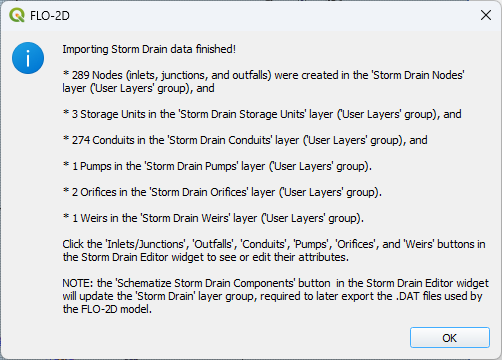

Import SWMM.INP
An existing SWMM.inp project can be imported in a FLO-2D Surface System.
Click on Import SWMM.inp and browse the project folder that contains the file.

If a storm drain already exists, the swmm.inp file will update the current project. This is a way to easily modify the swmm.inp file and then update it.
3a. Answer yes to the dialog box will update the inp data.
3b. Answer no will rebuild the storm drain network.

If the project does not have a storm drain, the import tool will build the storm drain network.
4a. In this case, the storm drain is imported but the FLO-2D data is not loaded. It will be necessary to build the data that goes in swmmflo.dat, swmmflort.dat, and swmmoutf.dat. That process will be covered in an advanced tutorial.

QGIS FLO-2D layers will be filled up with the data from the following *.INP groups:
Inlets/Junctions
Outfalls
Storage Units
Conduits
Cross sections
Losses
Coordinates
Vertices